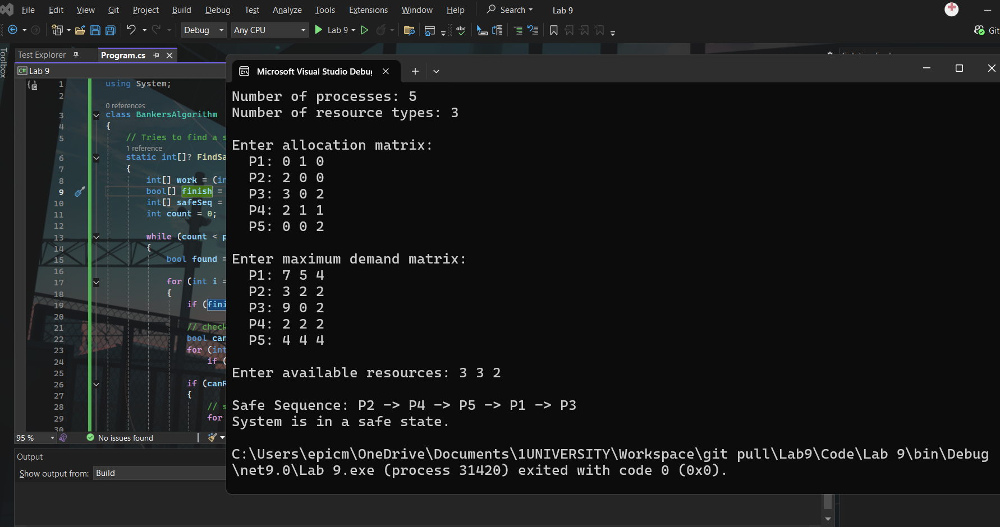

This portfolio contains screenshots and definitions for all of the tasks I have completed in my lab.
In this lab I got experience with CPU scheduling algorithms, which are the methods an operating system uses to decide which process gets access to the CPU and when. I implemented two main algorithms in C# — First-Come-First-Serve (FCFS) and Round-Robin — using a set of predefined processes with different arrival times and execution times. FCFS runs jobs in the order they arrive, while Round-Robin chops CPU time into slices and rotates between processes, much more closely resembling how a real OS behaves. Playing around with different time quantum values (1, 3, 4, and 6) made it clear how that single number can have a big effect on turnaround time. The Gantt charts were one of the most useful parts — seeing the schedule laid out visually made it a lot easier to spot inefficiencies than just staring at numbers in a table. Overall this lab shifted scheduling from an abstract textbook concept to something I actually had to reason about and debug.
Lab 9 focused on
The allocation matrix is:
P1: R1=0, R2=1, R3=0
P2: R1=2, R2=0, R3=0
P3: R1=3, R2=0, R3=2
P4: R1=2, R2=1, R3=1
P5: R1=0, R2=0, R3=2
The maximum demand matrix (Table 1 from the brief) is:
P1: R1=7, R2=5, R3=4
P2: R1=3, R2=2, R3=2
P3: R1=9, R2=0, R3=2
P4: R1=2, R2=2, R3=2
P5: R1=4, R2=4, R3=4
The Need matrix is calculated as Need = Maximum - Allocation:
P1: R1=7, R2=4, R3=4
P2: R1=1, R2=2, R3=2
P3: R1=6, R2=0, R3=0
P4: R1=0, R2=1, R3=1
P5: R1=4, R2=4, R3=2
1. Select an initial state
Total resources are R1=10, R2=5, R3=7. Adding up everything currently allocated gives R1=7, R2=2, R3=5. So the available resources are:
Available = Total - Allocated = (10-7, 5-2, 7-5) = [R1=3, R2=3, R3=2]
2. Apply the Banker's Algorithm to determine if the state is safe or unsafe
We set Work = Available = [3, 3, 2]. At each step we look for a process whose Need is less than or equal to Work. When we find one, we let it run, add its allocation back into Work, and repeat until all processes are done or we get stuck.
Iteration 1 (Work = [3, 3, 2]):
P1: Need=[7,4,4] → 7 > 3, cannot run
P2: Need=[1,2,2] → 1≤3, 2≤3, 2≤2, P2 can run
Work = [3+2, 3+0, 2+0] = [5, 3, 2]
Iteration 2 (Work = [5, 3, 2]):
P1: Need=[7,4,4] → 7 > 5, cannot run
P3: Need=[6,0,0] → 6 > 5, cannot run
P4: Need=[0,1,1] → 0≤5, 1≤3, 1≤2, P4 can run
Work = [5+2, 3+1, 2+1] = [7, 4, 3]
Iteration 3 (Work = [7, 4, 3]):
P1: Need=[7,4,4] → 7≤7, 4≤4, but 4 > 3, cannot run
P3: Need=[6,0,0] → 6≤7, 0≤4, 0≤3, P3 can run
Work = [7+3, 4+0, 3+2] = [10, 4, 5]
Iteration 4 (Work = [10, 4, 5]):
P1: Need=[7,4,4] → 7≤10, 4≤4, 4≤5, P1 can run
Work = [10+0, 4+1, 5+0] = [10, 5, 5]
Iteration 5 (Work = [10, 5, 5]):
P5: Need=[4,4,2] → 4≤10, 4≤5, 2≤5, P5 can run
Work = [10+0, 5+0, 5+2] = [10, 5, 7]
All five processes completed successfully. The system is in a safe state.
3. Explain why the state is safe
The state is safe because at every iteration there was always at least one process whose remaining resource need could be satisfied by what was currently available. No process was ever permanently blocked. As each process finished and released its resources, it freed up enough for the next one to proceed. This guarantees that deadlock cannot occur in this state.
4. Safe sequence
P2 → P4 → P3 → P1 → P5
1. Recalculate available resources
With R1 now at 12 and allocation unchanged:
Available = (12-7, 5-2, 7-5) = [R1=5, R2=3, R3=2]
2. Apply the Banker's Algorithm
Set Work = [5, 3, 2].
Iteration 1 (Work = [5, 3, 2]):
P1: Need=[7,4,4] → 7 > 5, cannot run
P2: Need=[1,2,2] → 1≤5, 2≤3, 2≤2, P2 runs
Work = [5+2, 3+0, 2+0] = [7, 3, 2]
Iteration 2 (Work = [7, 3, 2]):
P1: Need=[7,4,4] → 7≤7, but 4 > 3, cannot run
P3: Need=[6,0,0] → 6≤7, 0≤3, 0≤2, P3 runs (one iteration earlier than Task 1)
Work = [7+3, 3+0, 2+2] = [10, 3, 4]
Iteration 3 (Work = [10, 3, 4]):
P1: Need=[7,4,4] → 7≤10, but 4 > 3, cannot run
P4: Need=[0,1,1] → 0≤10, 1≤3, 1≤4, P4 runs
Work = [10+2, 3+1, 4+1] = [12, 4, 5]
Iteration 4 (Work = [12, 4, 5]):
P1: Need=[7,4,4] → 7≤12, 4≤4, 4≤5, P1 runs
Work = [12+0, 4+1, 5+0] = [12, 5, 5]
Iteration 5 (Work = [12, 5, 5]):
P5: Need=[4,4,2] → 4≤12, 4≤5, 2≤5, P5 runs
Work = [12+0, 5+0, 5+2] = [12, 5, 7]
All five processes completed. The system is in a safe state.
3. Explain why the state is still safe
The system is still safe, but the order changed slightly. The extra 2 units of R1 mean that after P2 finishes and releases its allocation, Work already has enough R1 to satisfy P3's need of 6 straight away. In Task 1, P3 had to wait until after P4 because Work[R1] was only 5 at that point. Having more R1 gives the OS more flexibility when deciding which process to schedule next, without compromising safety.
4. Safe sequence
P2 → P3 → P4 → P1 → P5
1. Recalculate available resources
Available = (12-7, 7-2, 7-5) = [R1=5, R2=5, R3=2]
2. Apply the Banker's Algorithm
Set Work = [5, 5, 2].
Iteration 1 (Work = [5, 5, 2]):
P1: Need=[7,4,4] → 7 > 5, cannot run
P2: Need=[1,2,2] → 1≤5, 2≤5, 2≤2, P2 runs
Work = [5+2, 5+0, 2+0] = [7, 5, 2]
Iteration 2 (Work = [7, 5, 2]):
P1: Need=[7,4,4] → 7≤7, 4≤5, but 4 > 2, cannot run
P3: Need=[6,0,0] → 6≤7, 0≤5, 0≤2, P3 runs
Work = [7+3, 5+0, 2+2] = [10, 5, 4]
Iteration 3 (Work = [10, 5, 4]):
P1: Need=[7,4,4] → 7≤10, 4≤5, 4≤4, P1 runs — earlier than in both previous tasks
Work = [10+0, 5+1, 4+0] = [10, 6, 4]
Iteration 4 (Work = [10, 6, 4]):
P4: Need=[0,1,1] → 0≤10, 1≤6, 1≤4, P4 runs
Work = [10+2, 6+1, 4+1] = [12, 7, 5]
Iteration 5 (Work = [12, 7, 5]):
P5: Need=[4,4,2] → 4≤12, 4≤7, 2≤5, P5 runs
Work = [12+0, 7+0, 5+2] = [12, 7, 7]
All five processes completed. The system is in a safe state.
3. Reflect on the order of process execution and how additional resources affect system performance
Across all three tasks the system stayed safe, but the sequence changed each time resources were added. In Task 1 the safe sequence was P2→P4→P3→P1→P5. In Task 2, when R1 went up to 12, P3 moved earlier because it could now get its R1 need of 6 satisfied sooner, giving P2→P3→P4→P1→P5. In Task 3, when R2 also went up to 7, P1 moved from near the end all the way to third place because its R2 need of 4 could now be met earlier, giving P2→P3→P1→P4→P5.
What this shows is that adding resources doesn't just keep the system safe, it also reduces how long processes have to wait. In a real system this would mean better responsiveness and higher throughput overall. Even a small increase in one resource type can have a noticeable knock-on effect on the whole scheduling order.
Write a C# program to simulate Banker's Algorithm and determine whether a given state is safe.
The program takes user input for the number of processes and resource types, reads the allocation and maximum demand matrices, calculates the Need matrix, then runs the safety algorithm and prints either the safe sequence or an unsafe state message.
using System;
class BankersAlgorithm
{
// Finds a safe sequence, returns null if the state is unsafe
static int[]? FindSafeSequence(int[,] need, int[,] alloc, int[] available, int p, int r)
{
int[] work = (int[])available.Clone(); // working copy of available resources
bool[] finish = new bool[p]; // tracks which processes have finished
int[] safeSeq = new int[p];
int count = 0;
while (count < p)
{
bool found = false;
for (int i = 0; i < p; i++)
{
if (finish[i]) continue; // already finished, skip
// Check if this process's need can be satisfied by current work
bool canRun = true;
for (int j = 0; j < r; j++)
if (need[i, j] > work[j]) { canRun = false; break; }
if (canRun)
{
// Simulate process finishing - release resources back to work
for (int j = 0; j < r; j++)
work[j] += alloc[i, j];
safeSeq[count++] = i;
finish[i] = true;
found = true;
}
}
// If nothing ran this pass, we're stuck - unsafe state
if (!found) return null;
}
return safeSeq;
}
static void Main()
{
Console.Write("Number of processes: ");
int p = int.Parse(Console.ReadLine()!);
Console.Write("Number of resource types: ");
int r = int.Parse(Console.ReadLine()!);
int[,] alloc = new int[p, r];
int[,] maxD = new int[p, r];
int[,] need = new int[p, r];
Console.WriteLine("\nEnter allocation matrix:");
for (int i = 0; i < p; i++)
{
Console.Write($" P{i + 1}: ");
string[] vals = Console.ReadLine()!.Trim().Split();
for (int j = 0; j < r; j++)
alloc[i, j] = int.Parse(vals[j]);
}
Console.WriteLine("\nEnter maximum demand matrix:");
for (int i = 0; i < p; i++)
{
Console.Write($" P{i + 1}: ");
string[] vals = Console.ReadLine()!.Trim().Split();
for (int j = 0; j < r; j++)
{
maxD[i, j] = int.Parse(vals[j]);
need[i, j] = maxD[i, j] - alloc[i, j]; // Need = Max - Allocation
if (need[i, j] < 0)
throw new Exception($"Allocation exceeds maximum for P{i + 1}");
}
}
Console.Write("\nEnter available resources: ");
string[] avVals = Console.ReadLine()!.Trim().Split();
int[] available = new int[r];
for (int j = 0; j < r; j++)
available[j] = int.Parse(avVals[j]);
int[]? seq = FindSafeSequence(need, alloc, available, p, r);
Console.WriteLine();
if (seq != null)
{
Console.Write("Safe Sequence: ");
for (int k = 0; k < p; k++)
Console.Write((k > 0 ? " -> " : "") + $"P{seq[k] + 1}");
Console.WriteLine("\nSystem is in a safe state.");
}
else
{
Console.WriteLine("System is in an UNSAFE state - no safe sequence exists.");
}
}
}

How the program works
The user enters the number of processes and resource types first, then the allocation and maximum demand matrices row by row. The program calculates Need = Max - Allocation for each entry automatically, and throws an error if any allocation value is larger than the maximum since that would be an invalid state.
The main logic is in FindSafeSequence. It starts with a Work vector equal to Available and loops through all unfinished processes looking for one whose Need is less than or equal to Work. When it finds one, it marks it finished and adds its allocation back to Work, simulating the process completing and releasing its resources. This repeats until either all processes finish (safe) or a full pass goes by without any process being able to run (unsafe).
Example output using Task 1 values:
Safe Sequence: P2 -> P4 -> P3 -> P1 -> P5
System is in a safe state.